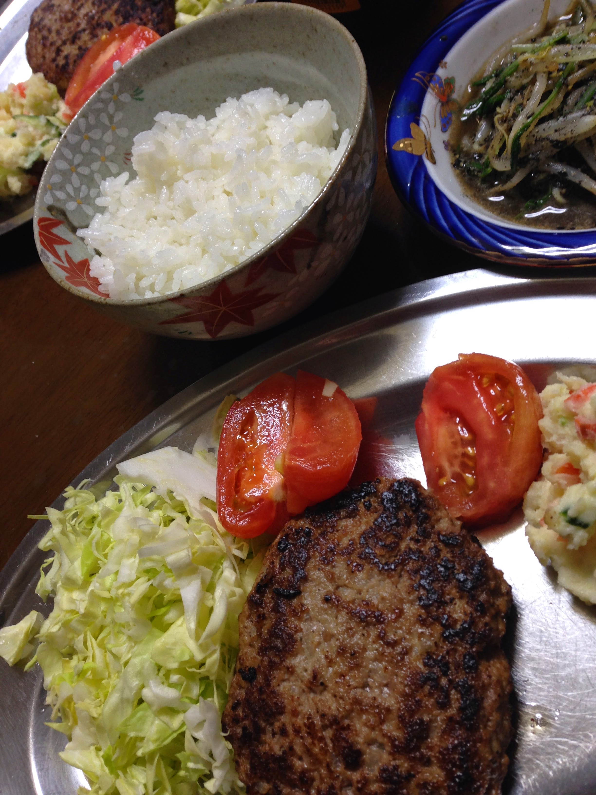

Hambagu ハンバーグ

Description
Hambagu is a Japanese style hamburger steak made from a mixture of ground beef and ground pork.
1/2 pound ground beef
1/2 pound ground pork
1/2 onion - minced
1 egg
1/4 cup Panko (Japanese bread crumbs)
1/4 cup milk
Salt, pepper, nutmeg
Instructions
Mince and satué onion
Move onions onto a plate and let it cool down
Mix ground beef, ground pork, and egg in a large mixing bowl
In a separate small bowl, mix panko and milk until panko absorbs the milk
Add panko and onion to the large mixing bowl and mix with ground beef, ground pork, and egg
Salt, pepper, nutmeg to taste. Mix again
Once mixed, make patties about the size of a tennis ball. Toss back and forth in hands to release air caught in the meat
Flatten patties into an oval shape about 3/4 inch thick